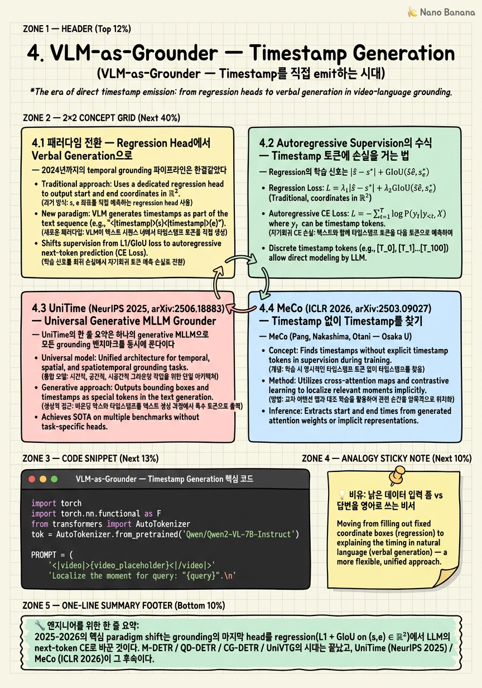

VLM-as-Grounder — Timestamp Generation

🎯 학습 목표
- Verbal generation paradigm과 regression head의 본질적 차이를 설명할 수 있다
- UniTime의 multi-benchmark single-model 학습 레시피와 prompt format을 재현 수준에서 이해한다
- MeCo의 structural token + query-focused captioning + contrastive grounding 3-stage 디자인을 도식화할 수 있다
- Timestamp tokenization 선택이 정확도·일반화·hallucination에 끼치는 영향을 비교할 수 있다
- 왜 verbal generation이 multi-event와 abstention을 자연스럽게 흡수하는지 cross-entropy 관점에서 논증할 수 있다
Chapter 3에서 본 DETR 계열은 모두 (1) 비디오를 frozen encoder로 인코딩, (2) text를 cross-attention으로 주입, (3) 마지막 단에 regression head 두 개(start, end)를 달아 IoU loss로 학습했다. 이 구조는 단일 moment에서는 강력하지만 (a) 멀티-이벤트가 등장하면 query 수를 정해야 하고, (b) 해당 moment가 비디오에 없다를 모델링하기 어렵고, (c) cross-benchmark transfer가 거의 안 된다. 2025-2026년의 전환은 이 head를 통째로 들어내고 LLM head 자체가 timestamp 문자열을 토큰으로 뱉도록 바꿨다. UniTime (NeurIPS 2025, arXiv:2506.18883)은 universal grounder를 만들었고, MeCo (ICLR 2026, arXiv:2503.09027)는 한 발 더 나아가 timestamp 자체를 emit하지 않고 structural token을 생성한 다음 contrastive matching으로 boundary를 결정하는 timestamp-free 변형으로 QVHighlights mAP=45.3 / HIT@1=75.1을 기록했다.
핵심 내용
4.1 패러다임 전환 — Regression Head에서 Verbal Generation으로
2024년까지의 temporal grounding 파이프라인은 한결같았다. CLIP·VideoMAE 같은 frozen visual encoder가 frame token을 만들고, text encoder가 query embedding을 만들고, transformer decoder가 N개의 candidate moment query를 받아 cross-attention을 돈 뒤, 마지막에 (start_offset, end_offset) ∈ ℝ²를 회귀했다. 손실은 L1 + GIoU.
2025-2026의 전환은 이 마지막 head를 버리는 것이다. 대신 비디오를 입력받은 VLM의 LLM body가 직접 문자열을 토큰 단위로 출력한다 — <0.32, 0.41> 혹은 from 12.3 to 18.7 seconds. 학습은 그저 next-token cross-entropy다.
핵심 통찰 세 가지. 첫째, regression은 한 번에 하나의 (s,e) 쌍을 강제한다. multi-event를 다루려면 query 수 N을 정하고 Hungarian matching을 굴려야 한다. 반면 verbal generation은 <0.10, 0.18>, <0.55, 0.62>처럼 그냥 더 길게 쓰면 된다. 둘째, regression head는 abstention을 모델링할 자리가 없다. 출력 차원이 ℝ²로 고정되어 있어 없음이 표현되지 않는다. LLM은 'I cannot find this moment'를 그냥 쓸 수 있다. 셋째, regression head는 데이터셋별로 다시 학습해야 한다. LLM head는 동일한 prompt 포맷이면 Charades-STA와 ActivityNet과 QVHighlights를 같은 weight로 받을 수 있다 — UniTime이 정확히 그 universal grounder를 만들었다.
4.2 Autoregressive Supervision의 수식 — Timestamp 토큰에 손실을 거는 법
Regression의 학습 신호는 |ŝ - s*| + GIoU(ŝê, s*e*). Verbal generation의 학습 신호는 어디에 걸리는가? 답은 단순하다: timestamp를 구성하는 토큰들의 next-token cross-entropy.
예를 들어 target이 'The moment is <0.45, 0.62>.'라고 하자. Tokenizer가 이를 여러 토큰으로 쪼갠다고 가정하면, 학습 시점에는 모든 토큰에 대해 표준 LM loss를 건다: L = -Σ_t log p(y_t | y_<t, video, query).
실전에서는 timestamp 토큰만 weighted하거나 prompt prefix는 loss에서 마스킹하는 식으로 변형한다. 중요한 디테일은 timestamp가 어떤 토큰 시퀀스로 잘리는가다. Qwen2-VL의 BPE tokenizer는 0.45를 ['0', '.', '45']로 자른다. 즉 모델은 정수부와 소수부를 순차적으로 결정한다. 이게 의외로 잘 동작한다 — 위계적 결정 구조가 자연스럽게 생긴다.
하지만 함정도 있다. (a) 연속 실수의 BPE 분할은 vocab에 운 좋게 들어있는 숫자열에만 1-token이 된다. (b) continuous-string approach vs discrete-bin approach 트레이드오프. 일부 후속 연구는 [TIME_0], [TIME_1], ..., [TIME_99] 같은 special token vocabulary를 미리 박아 두고 분할 일관성을 강제한다. UniTime은 연속 문자열 쪽이고, MeCo는 한 발 더 나아가 timestamp를 아예 안 쓰는 structural token 쪽이다.
4.3 UniTime (NeurIPS 2025, arXiv:2506.18883) — Universal Generative MLLM Grounder
UniTime의 한 줄 요약은 하나의 generative MLLM으로 모든 grounding 벤치마크를 동시에 푼다이다. 저자 (Zeqian Li, Shangzhe Di, Zhonghua Zhai, Weilin Huang, Yanfeng Wang, Weidi Xie)는 robust universal grounding을 vision-language understanding이 충분히 깊어진 generative MLLM 위에서만 풀 수 있다고 주장한다.
핵심 설계: - Backbone: 7B 급 generative MLLM (Qwen2-VL 계열) - Input format: 비디오 frame token + 'Localize the moment described as: <query>. Output the start and end timestamps as fractions of the video duration.' 같은 prompt - Output format: <s, e> 정규화 분수 timestamp - Training: Charades-STA / ActivityNet-Captions / TACoS / QVHighlights를 prompt 포맷을 통일해 한 weight로 multi-task fine-tune - Result: TACoS [email protected] 60+ 등 multi-benchmark에서 도메인 전문 모델에 근접하거나 추월하는 universal score
UniTime이 보여주는 핵심은 두 가지다. 첫째, prompt format이 같으면 benchmark는 단지 데이터 분포의 차이일 뿐이고 verbal generation은 이 분포 시프트를 next-token CE 하나로 흡수한다. 둘째, regression head 시대에는 거의 불가능했던 universal grounder 컨셉이 verbal generation 위에서는 자연스럽다. 다만 Open Problem OP-11이 지적하듯, UniTime도 domain-specialized 모델을 모든 metric에서 압도하지는 못한다 — universal score가 평균적으로 좋다는 의미일 뿐, 특정 도메인의 SOTA를 깬 것은 아니다.
4.4 MeCo (ICLR 2026, arXiv:2503.09027) — Timestamp 없이 Timestamp를 찾기
MeCo (Pang, Nakashima, Otani — Osaka U. / CyberAgent)는 verbal generation paradigm을 한 단계 더 끌고 간다. 제목 'Measure Twice, Cut Once'가 시사하듯 MeCo의 핵심 가설은 timestamp 숫자를 LLM에게 쓰게 하는 것 자체가 LLM의 강점을 낭비한다는 것이다. LLM은 몇 초를 출력하기엔 차라리 약한 회귀기다. 그러나 무엇이 일어났는지를 자연어로 묘사하는 데는 압도적이다.
3-stage 디자인: 1. Structural token generation: 비디오를 균등 분할하는 structural token 시퀀스 [S_0], [S_1], ..., [S_K]를 LLM body가 생성한다. 이 토큰들은 timestamp가 아니라 비디오를 K+1개의 의미 단위로 자르는 cut marker다.
2. Query-focused captioning: query를 조건으로 각 segment에 대해 짧은 caption을 생성한다.
3. Contrastive structural-token grounding: 마지막으로 structural token embedding과 query embedding을 contrastive로 정렬해, query가 어느 structural cut과 가장 잘 맞는지로 boundary를 결정한다.
학습 디테일: LoRA rank 128, 1 epoch on E.T.Instruct 164K, base는 E.T.Chat / Qwen2VL-7B.
결과는 QVHighlights에서 mAP=45.3, HIT@1=75.1 — M-DETR, UMT, QD-DETR, CG-DETR, UniVTG를 모두 추월했다. 주의할 점 하나: _research_papers.md에 표기된 대로 MeCo의 zero-shot Charades-STA SOTA 주장은 검증 단계에서 refute되었다. 즉 MeCo의 강력함은 QVHighlights에서 가장 분명하고, 다른 벤치마크로의 일반화는 아직 열린 문제다.
왜 MeCo가 중요한가? 그것은 verbal generation = timestamp 문자열을 쓰는 것이라는 등식 자체를 무너뜨렸기 때문이다. MeCo의 LLM은 timestamp를 단 하나도 쓰지 않는다. 그럼에도 verbal generation의 모든 장점을 유지한다. paradigm의 진짜 본질이 LLM head가 결정한다에 있지 timestamp를 텍스트로 쓴다에 있지 않음을 MeCo가 입증한 셈이다.
4.5 가계도 — TimeChat → VTimeLLM → TimeSuite를 거쳐 여기까지
UniTime과 MeCo는 갑자기 나타난 게 아니다. 2023-2024년의 다음 chain이 길을 닦았다.
- TimeChat: 비디오 frame을 LLM에 넣어 timestamp 문자열을 생성하는 패러다임의 초기 사례. 'Output the timestamp ...' prompt template을 본격적으로 도입.
- VTimeLLM: 3-stage curriculum (feature alignment → boundary-aware tuning → instruction tuning). 'When does X happen?'에 'X happens from t1 to t2'로 답하는 형식을 standardize.
- TimeSuite (arXiv:2410.19702): TimePro 데이터셋 + temporal grounded captioning + temporal adaptive position encoding으로 verbal generation의 정밀도를 한 단계 끌어올림. Time-R1의 baseline 표에서 TimeSuite는 Charades-STA R1@0.3 69.9로 등장.
UniTime은 이 chain의 universal branch, MeCo는 timestamp-free / structural branch에 해당한다. 같은 verbal generation paradigm의 두 가지 진화 방향이라고 보면 된다.
주의해야 할 zoom-out: 이 chain은 Chapter 5의 RL post-training (Time-R1, TempSamp-R1, VideoTemp-o3, TimeLens)로 직접 이어진다. RL은 verbal generation 위에서만 작동한다 — regression head는 verifiable reward를 받을 token이 없기 때문이다. 즉 Chapter 4의 paradigm shift가 없었다면 Chapter 5의 GRPO 시대도 없다.
4.6 왜 Verbal Generation이 이기는가 — 다섯 가지 결정적 우위
1. Compositional reasoning via LLM: query가 'after the person turns off the light but before they sit down'처럼 복합적일 때, regression head는 query embedding 한 벡터를 cross-attention으로 흡수할 뿐이다. LLM head는 query를 읽고 추론한 다음 timestamp를 쓴다.
2. Multi-event 자연 지원: <0.10, 0.18>, <0.55, 0.62>를 그냥 더 쓰면 된다. QVHighlights처럼 평균 1.8개의 disjoint moment가 있는 벤치마크에서 regression은 Hungarian matching이 필요하지만 verbal generation은 시퀀스 연장으로 해결한다.
3. Abstention 가능성 (아직 드물지만 구조적으로 가능): regression head ∈ ℝ²는 none을 표현할 차원이 없다. LLM head는 'no such moment exists in this video' 토큰을 그냥 쓸 수 있다.
4. Cross-benchmark transfer: prompt format이 같으면 weight 하나로 여러 데이터셋을 받는다. UniTime의 universal grounder가 이 우위를 직접 입증한다.
5. RL과의 자연스러운 결합: token-level reward (tIoU + format reward)가 verifiable하다. Time-R1의 GRPO 학습은 verbal generation 위에서만 작동한다.
남은 함정도 명확하다 — hallucination (OP-7), search failure at hour scale (OP-1), reward hacking (OP-12). 이 셋은 paradigm의 비용이고, Chapter 6-9에서 차례로 정리한다.
💡 비유로 이해하기
옛 방식의 regression head는 종이 양식이다. 시작 시각: ____, 종료 시각: ____ 두 칸만 있다. 사용자가 이 일은 비디오에 없습니다라고 말하고 싶어도 그 칸이 없다. 이 일은 두 번 일어났습니다라고 말하고 싶어도 칸은 두 개뿐이다.
새 방식의 verbal generation은 답변을 자연어로 쓰는 비서다. 같은 질문이 들어와도 비서는 0.32부터 0.41까지라고 쓸 수도 있고, 0.10부터 0.18까지 한 번, 그리고 0.55부터 0.62까지 또 한 번이라고 쓸 수도 있고, 비디오 어디에도 그런 장면은 없습니다라고 쓸 수도 있다. 한 명의 비서가 인사부 질문도 회계부 질문도 같은 문체로 답한다 (cross-benchmark transfer).
MeCo는 한 발 더 나아가 비서가 시계를 보지 않는 경우다. 비서는 이 회의는 인사 단계, 토론 단계, 결론 단계로 나뉜다고 구조를 말로 묘사한 뒤(structural token), 질문이 어느 단계와 가장 잘 맞는지를 매칭으로 결정한다(contrastive grounding). 시계 없이도 결국 몇 시 몇 분을 답할 수 있다.
💻 코드 예시
Qwen2-VL 스타일의 미니멀 VLM grounder를 가정한, timestamp 토큰에 대한 autoregressive supervision 학습 step 스케치다.
import torch
import torch.nn.functional as F
from transformers import AutoTokenizer
tok = AutoTokenizer.from_pretrained('Qwen/Qwen2-VL-7B-Instruct')
PROMPT = (
'<|video|>{video_placeholder}<|/video|>'
'Localize the moment for query: "{query}".\n'
'Output as <s, e> with normalized fractions.\nAnswer: '
)
def build_batch(video_features, query_text, target_span):
s, e = target_span
target_str = f'<{s:.2f}, {e:.2f}>'
prompt = PROMPT.format(video_placeholder='', query=query_text)
prompt_ids = tok(prompt, add_special_tokens=False).input_ids
target_ids = tok(target_str, add_special_tokens=False).input_ids
input_ids = prompt_ids + target_ids
labels = [-100] * len(prompt_ids) + target_ids
return torch.tensor(input_ids)[None], torch.tensor(labels)[None]
def training_step(model, video_features, query_text, target_span):
input_ids, labels = build_batch(video_features, query_text, target_span)
logits = model(input_ids=input_ids, video_features=video_features).logits
shift_logits = logits[:, :-1, :].contiguous()
shift_labels = labels[:, 1:].contiguous()
loss = F.cross_entropy(
shift_logits.view(-1, shift_logits.size(-1)),
shift_labels.view(-1),
ignore_index=-100,
)
return loss
for span in [(0.45, 0.62), (0.46, 0.63), (0.456, 0.621)]:
s, e = span
ts = f'<{s:.2f}, {e:.2f}>'
ids = tok(ts, add_special_tokens=False).input_ids
print(f'{ts!r:>20} -> {len(ids)} tokens: {tok.convert_ids_to_tokens(ids)}')이 스케치의 핵심은 네 가지다. (1) Prompt format: UniTime 류는 <s, e>를 normalized fraction으로 출력하라를 prompt에 명시한다. (2) Label masking: prompt 부분 토큰은 모두 -100으로 가려, timestamp 토큰에만 loss가 걸린다. (3) Tokenization detail: <0.45, 0.62>는 한 덩어리가 아니라 BPE에서 약 7-9개 토큰으로 잘린다. 정확도의 미세 자리수는 마지막 소수부 토큰이 결정한다. 두 자리 정규화를 쓰는 이유는 vocab 일관성을 확보하기 위함이다. (4) MeCo는 이 디테일 자체를 우회한다: structural token만 emit하므로 BPE 소수부 토큰 분할 문제가 아예 없다.
🏭 현업에서의 평가
✅ 시니어가 보는 것
- 가변 길이 출력의 자연스러운 처리: regression head는 Hungarian matching, verbal generation은 시퀀스 연장
- Tokenization choice의 영향 설명: continuous string vs discrete bin vs structural token
- Loss masking의 이유: prompt prefix에 -100 masking이 왜 필수인가
- Multi-benchmark single-model의 가능성과 한계: UniTime이 universal grounder를 만들었지만 domain-specialized 모델을 전부 누르지 못함
- RL과 verbal generation의 결합 필연성
⚠️ 레드 플래그
- verbal generation은 그냥 LLM에 prompt 주는 거 아닌가라고 답하는 경우
- timestamp tokenization 디테일을 모르고 그냥 숫자를 출력한다고 답하는 경우
- MeCo가 timestamp를 emit한다고 잘못 설명하는 경우
- verbal generation이 모든 면에서 regression head보다 낫다고 단정하는 경우
- QVHighlights mAP=45.3 / HIT@1=75.1이 어떤 baseline들을 추월한 숫자인지 모르는 경우
🎤 예상 인터뷰 질문
- Q1 (Multi-event ground 처리): query 'the person enters then later sits down'에 대해 두 disjoint moment가 답이라고 하자. M-DETR style regression head는 어떻게 이를 처리하며 어떤 hyperparameter가 필요한가? Verbal generation은 어떻게 같은 문제를 푸는가?
- Q2 (Tokenization trade-off): timestamp를 출력하는 두 가지 방식 — 연속 실수 문자열 vs discrete bin special token — 각각의 장단을 vocab 일관성, BPE 분할 안정성, cross-benchmark 일반화, decoding 길이의 네 차원에서 비교하라.
- Q3 (MeCo의 contrastive structural-token motivation): MeCo는 왜 timestamp 자체를 emit하지 않기로 결정했는가? LLM은 약한 회귀기이고 강한 captioner라는 가설이 3-stage 디자인의 각 단계와 어떻게 대응되는지 설명하라.
✨ 핵심 요약
Verbal generation이 regression head를 대체했다
2025-2026의 핵심 paradigm shift는 grounding의 마지막 head를 regression(L1 + GIoU on (s,e) ∈ ℝ²)에서 LLM의 next-token CE로 바꾼 것이다. M-DETR / QD-DETR / CG-DETR / UniVTG의 시대는 끝났고, UniTime (NeurIPS 2025) / MeCo (ICLR 2026)이 그 후속이다.
학습 신호는 timestamp 토큰의 cross-entropy 하나뿐
verbal generation의 supervision은 <s, e>를 BPE로 자른 토큰들에 걸리는 next-token CE다. prompt prefix는 -100으로 masking해 instruction overfitting을 막는다.
UniTime은 universal grounder의 가능성을 입증
UniTime (arXiv:2506.18883)은 하나의 generative MLLM weight로 Charades-STA, ActivityNet, TACoS, QVHighlights를 동시에 처리한다.
MeCo는 timestamp 없이 timestamp를 찾는다
MeCo (arXiv:2503.09027)는 LLM에게 timestamp 숫자를 쓰게 하는 대신 structural token을 생성시키고 query-focused captioning과 contrastive matching으로 boundary를 결정한다. QVHighlights mAP=45.3 / HIT@1=75.1로 M-DETR, UMT, QD-DETR, CG-DETR, UniVTG를 전부 추월했다.
Tokenization이 정확도의 미세 자리수를 결정한다
<0.45, 0.62>는 한 토큰이 아니라 BPE에서 약 7-9개로 잘린다. 정수부 토큰이 거시 위치를, 소수부 토큰이 미세 조정을 결정하는 위계 구조가 자연스럽게 생긴다.
가계도: TimeChat → VTimeLLM → TimeSuite → UniTime / MeCo
verbal generation paradigm은 갑자기 등장한 게 아니다. TimeChat이 prompt template을 표준화하고, VTimeLLM이 3-stage curriculum을 정착시키고, TimeSuite (arXiv:2410.19702)가 정밀도를 끌어올린 뒤 UniTime이 universal branch로 MeCo가 timestamp-free branch로 분기했다.
Verbal generation은 RL의 전제 조건
Chapter 5에서 다룰 Time-R1, TempSamp-R1, VideoTemp-o3, TimeLens의 GRPO/RLVR은 verbal generation 위에서만 성립한다. regression head는 sampled token sequence가 없어 verifiable token-level reward를 받을 자리가 없다.
Paradigm의 비용은 hallucination, search failure, reward hacking
(a) LLM의 hallucination이 그대로 grounding에 들어와 7B 모델이 Charades-STA-Negative split에서 30-50% false-positive를 낸다 (OP-7). (b) hour-scale 비디오에서 monolithic VLM grounder는 search 문제를 풀지 못한다 (ExtremeWhenBench Qwen3.5-9B mIoU 0.110 vs CLIP retrieval 0.269, OP-1). (c) RL이 IoU 보상을 해킹한다 (OP-12).